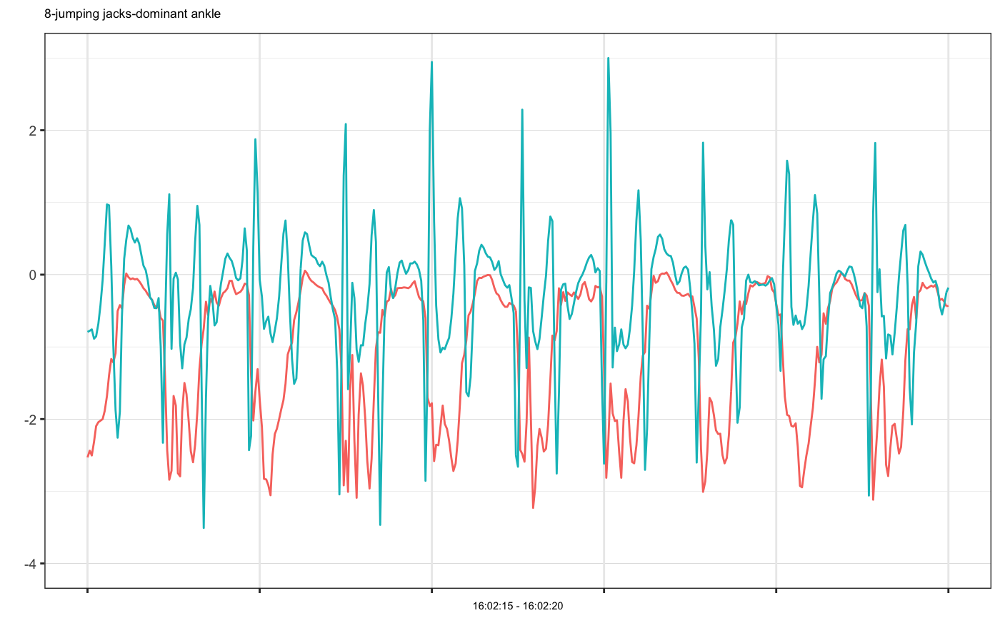
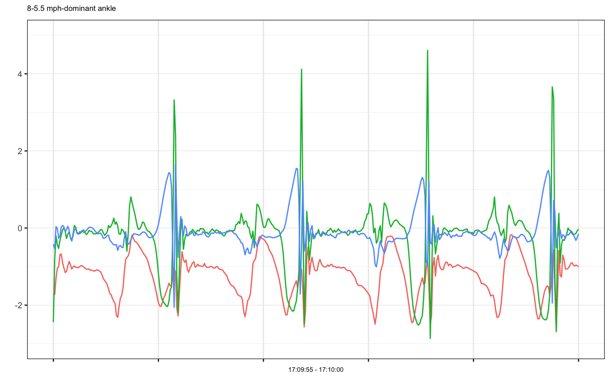

mhealth.plot_timeseries(dfs, file_types, select_cols, group_cols = NULL, title_cols = NULL, ncols = 4, xlabel_timeformat = "%H:%M:%OS", nrows = NULL, as_gg_list = FALSE, text_annotation = FALSE, share_y = TRUE)
| file_types | vector of file_types for each input dataframes |
|---|---|
| select_cols | list of selected cols for each input data frames to be plotted. |
| group_cols | group column names in character vector to divide the plot into subplot. All dataframes should share the same group column names. |
| title_cols | specify columns that will be put in the title of each plot |
| ncols | number of columns in the subplot layout per page. Default is 4 columns. |
| nrows | number of rows in the subplot layout per page. Default is NULL, which will be calculated automatically by `ncols`, so that ncols * nrows >= total number of subplots. But it should not exceed 6 per page. |
| as_gg_list | if true, return plots as list of ggplot objects; otherwise return gridGrob arranged by ncols and nrows |
# Example 1: single accelerometer time series plot example1 = accelPA[accelPA$PID == 8 & accelPA$ACTIVITY == "jumping jacks",] head(example1, 3)#> HEADER_TIME_STAMP X_ACCELERATION_METERS_PER_SECOND_SQUARED #> 1 2015-12-04 16:02:15 -2.531 #> 2 2015-12-04 16:02:15 -2.438 #> 3 2015-12-04 16:02:15 -2.504 #> Y_ACCELERATION_METERS_PER_SECOND_SQUARED #> 1 -0.793 #> 2 -0.777 #> 3 -0.758 #> Z_ACCELERATION_METERS_PER_SECOND_SQUARED ACTIVITY PID LOCATION #> 1 -0.305 jumping jacks 8 dominant ankle #> 2 0.281 jumping jacks 8 dominant ankle #> 3 0.078 jumping jacks 8 dominant anklemhealth.plot_timeseries(dfs = list(example1), file_types = c("sensor"), select_cols = list(c(2,3,4)), group_cols = c("PID", "ACTIVITY", "LOCATION"), as_gg_list = TRUE)#> #>#> [[1]]#># we may also plot only selected axes mhealth.plot_timeseries(dfs = list(example1), file_types = c("sensor"), select_cols = list(c(2,3)), group_cols = c("PID", "ACTIVITY", "LOCATION"), as_gg_list = TRUE)#> #>#> [[1]]#># Set cols to be used as subtitle mhealth.plot_timeseries(dfs = list(example1), file_types = c("sensor"), select_cols = list(c(2,3,4)), title_cols = c("ACTIVITY", "LOCATION"), group_cols = c("PID", "ACTIVITY", "LOCATION"), as_gg_list = TRUE)#> #>#> [[1]]#># Example 2: multiple accelerometer times series plot example2 = accelPA[accelPA$ACTIVITY == "sitting" | accelPA$ACTIVITY == "5.5 mph",] head(example2, 3)#> HEADER_TIME_STAMP X_ACCELERATION_METERS_PER_SECOND_SQUARED #> 402 2015-12-04 16:05:14 -0.809 #> 403 2015-12-04 16:05:14 -0.820 #> 404 2015-12-04 16:05:14 -0.816 #> Y_ACCELERATION_METERS_PER_SECOND_SQUARED #> 402 -0.395 #> 403 -0.410 #> 404 -0.398 #> Z_ACCELERATION_METERS_PER_SECOND_SQUARED ACTIVITY PID LOCATION #> 402 -0.121 sitting 8 dominant ankle #> 403 -0.160 sitting 8 dominant ankle #> 404 -0.211 sitting 8 dominant anklemhealth.plot_timeseries(dfs = list(example2), file_types = c("sensor"), select_cols = list(c(2,3,4)), group_cols = c("PID", "ACTIVITY", "LOCATION"), as_gg_list = TRUE)#> #>#> #>#> [[1]]#> #> [[2]]#># Example 3: multiple accelerometer examples on the same plot, note that group cols is set to be ONLY PID, because OTHER cols have different values, if we want to put them on the same plot, they should be have the same group values at least example3a = accelPA[accelPA$ACTIVITY == "jumping jacks",] example3b = accelPA[accelPA$ACTIVITY == "sitting",] mhealth.plot_timeseries(dfs = list(example3a, example3b), file_types = c("sensor", "sensor"), select_cols = list(c(2,3,4), c(2,3,4)), group_cols = c("PID"), as_gg_list = TRUE)#> #>#> #>#> [[1]]#>